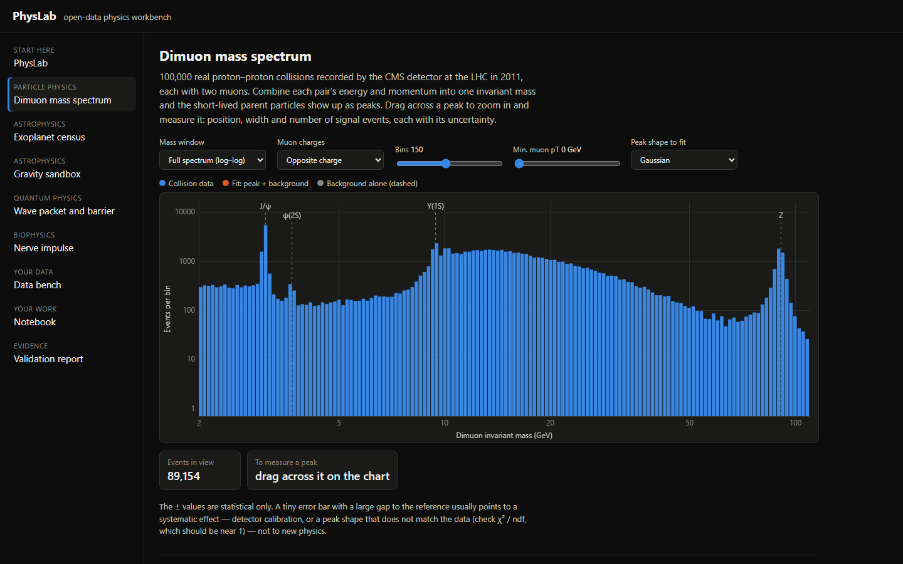

Matches published physics
J/ψ, Υ and Z peaks found in 100,000 CMS events land within 0.0006 GeV of CMS's values. 17 of 17 benchmarks pass in CI.
Case study · 03 of 04
Six browser labs where you test predictions against real data: 100,000 CMS collision events and 6,470 NASA exoplanets, with uncertainties. Masses land within 0.0006 GeV of CMS's published values, in 43 kB of code.

The problem
Open datasets from CERN and NASA are public, but using them takes specialist tools. Learners meet equations, not measurements, and never check a prediction against real data with real uncertainty.
What I built
Six labs share one set of pure physics functions. A notebook makes you lock a prediction before you see the result, and a bench fits your own CSV files. No build step and no runtime dependencies.
J/ψ, Υ and Z peaks found in 100,000 CMS events land within 0.0006 GeV of CMS's values. 17 of 17 benchmarks pass in CI.
Validation found about 5% of events with angle columns that disagreed with their momenta. The labs now compute from the momenta.
Six labs, a notebook with 15 missions and a CSV bench in 43 kB of gzipped JavaScript.
Architecture